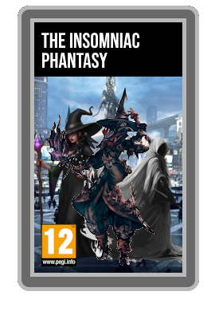
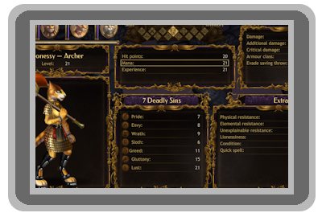
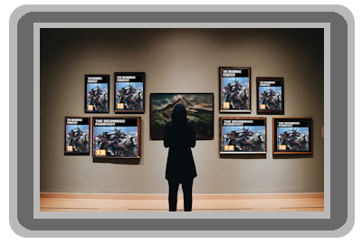

Dans The Insomniac Phantasy, les joueurs incarnent des "Éveillés", des individus piégés dans une strate de l'inconscient collectif appelée les Limbes Oniriques. Plongés dans un sommeil paradoxal perpétuel, ils découvrent un monde qui se désagrège sous l'influence des cauchemars d'une entité mystérieuse : le "Dormeur Primordial". L'objectif de la quête est de traverser les différents fragments de ce monde onirique pour trouver l'Ancre de Réalité, le seul artefact capable de briser la stase et de ramener les consciences dans le monde réel.
Le cœur du gameplay repose sur l'altération de l'environnement grâce à l'esprit du personnage. Chaque Éveillé doit jongler entre son lien avec la réalité et la folie des rêves.
| Caractéristique | Fonction en jeu | Conséquence si épuisée |
|---|---|---|
| Lucidité | Permet de modeler l'environnement et de créer des objets de toutes pièces. | Le joueur subit des hallucinations paralysantes. |
| Terreur | Ressource instable servant à lancer des sorts destructeurs. | Attire instantanément les "Traqueurs de Rêves". |
| Ancrage | Définit la résistance mentale face aux illusions mortelles. | Perte temporaire du contrôle du personnage (Folie). |

The Insomniac Phantasy est un projet de jeu de rôle imaginatif né de la passion commune de Gabriel Frouard et Bastien Gaillard . C'est Gabriel Frouard qui réalise la majorité du travail de conception et d'écriture, portant le projet à bout de bras avec une énergie remarquable.
La répartition des tâches au sein de l'équipe est claire et bien documentée.
Gabriel Frouard
est le moteur créatif du projet : il conçoit l'univers, les mécaniques de jeu et la grande majorité du contenu.
Bastien Gaillard
, lui, se charge de la correction orthographique et de la mise en forme des textes, apportant une rigueur précieuse à l'ensemble.
Erwan Deschamps
contribue quant à lui avec des idées supplémentaires, que les observateurs extérieurs qualifient généralement de "moyennes". Son apport reste néanmoins reconnu par l'équipe.
Dès sa sortie, le jeu a été reçu avec un immense enthousiasme par la communauté des rôlistes. Salué pour sa narration atypique et son atmosphère oppressante, il est rapidement devenu une référence dans le domaine des jeux hybrides.
| Prix / Événement | Catégorie | Résultat |
|---|---|---|
| Indie RPG Awards 2026 | Meilleure Narration Innovante | Lauréat |
| DreamCon Paris | Prix de la Direction Artistique | Lauréat |
| Ludique Mag | Meilleur Système de Jeu de l'Année | Nominé |
"Une plongée vertigineuse dans un esprit tourmenté. La mécanique de Lucidité est une masterclass absolue de game design." - Revue L'Écho Ludique.
The Insomniac Phantasy n'a jamais été commercialisé à très grande échelle pour le grand public, mais son univers a profondément inspiré William Pinaud lors de la création de PinaudStars . Le projet reste une œuvre de jeunesse fondatrice dans le parcours de Gabriel Frouard , révélant une créativité que l'on retrouvera plus tard dans la conception de SkyMotors Company .
